00
源码仓库：包含哪些内容，如何使用
这里提供了不同组件库的演示，以及整个系列的配套源码。你可以对比各个组件库的实现效果，也可以找到后续文章涉及的设计规范、示例与代码文件。
01第一部分
快速上手
0.1对照
各篇对应的仓库文件
| 视频和文字版 | 仓库里先看这些 |
|---|---|
| 01 · 整体演示：三种外观模式与四层拆解 | examples/ 演示页、docs/architecture.md、designs/react/src/kits/、vue/src/kits/、core/ |
| 02-1 · 视觉层：统一颜色 | designs/*/Design.md、spec/src/roles.ts、五个套件的主题部分 |
| 02-2 · 视觉层：统一尺寸 | designs/*/Design.md、spec/src/controls.ts、五个套件的档案 |
| 02-3 · 视觉层：统一图标 | spec/src/icons.ts、五个套件的图标部分 |
| 03-1 · 控件层：总述与数据录入 | spec/src/controls.ts、react/src/kit/types.tsvue/src/kit/types.ts、五个套件的适配记录 |
| 03-2 · 控件层：导航 | spec/src/controls.ts 里的菜单、标签栏、面包屑、下拉菜单，五个套件的对应部分 |
| 03-3 · 控件层：通用与数据展示 | spec/src/controls.ts 里的表格、头像、徽标，shadcn/ui 套件拼表格的部分 |
| 04 · 结构层：统一页面布局 | core/styles/、core/src/**/frame.ts、react/src/blocks/、vue/src/blocks/ |
| 05 · 验证：如何检查一致性 | audit/、spec/src/parts.ts |
| 06 · 交给 AI：如何让生成结果符合适配要求 | AGENTS.md、docs/ 三份做法说明、skills/ |
0.2跑起来
运行仓库
不用敲命令，在 AI 工具里直接对话。
 Claude
Claude CodexAI 工具，哪个都行
CodexAI 工具，哪个都行https://github.com/fanmihua/mihua-blocks-open仓库链接
帮我运行这个项目说一句
+↑
跑起来就是演示页
演示页 examples/index.html真的演示页，可以点打开完整演示页
README.md「跑起来」；examples/src/demo/main.tsx
0.3四层
一个界面分四层，对应仓库哪些文件
1视觉颜色、字号、圆角、尺寸、图标的取值
designs/spec/src/roles.tsspec/src/icons.ts02-1 至 02-3 篇
2控件每种控件统一成什么样，在每个库里怎么做到spec/src/controls.tsreact/src/kits/vue/src/kits/03-1 至 03-3 篇换组件库，只换这里
3结构页面上有什么、怎么排core/styles/react/src/blocks/vue/src/blocks/04 篇
4逻辑选了什么、筛了什么、提交以后怎样
core/src/**/controller.tsdocs/architecture.md「四层在仓库里的位置」
02第二部分
目录说明
0.4目录总览
目录总览
文件清单是从 git 列出来的，测试文件在下面每一节的表里
0.5designs/
designs/：规范的源头
黑白 designs/mono
#0A0A0A控件 32圆角 6Lucide
蓝色 designs/blue
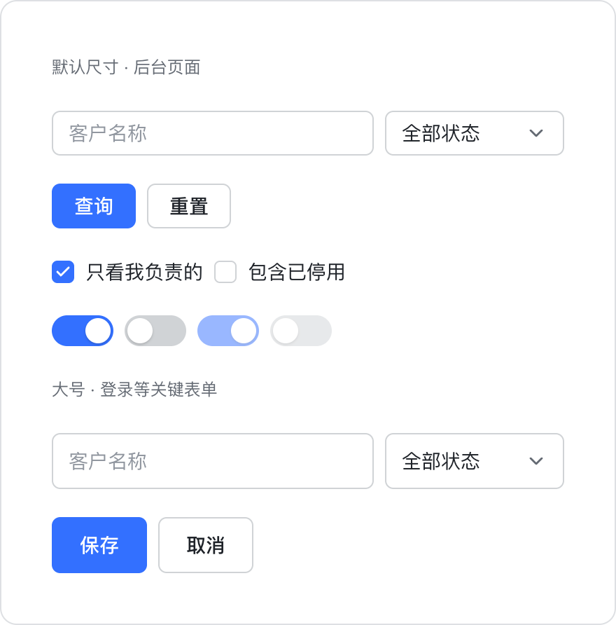
#3370FF控件 32圆角 6Lucide
压力测试? designs/stress
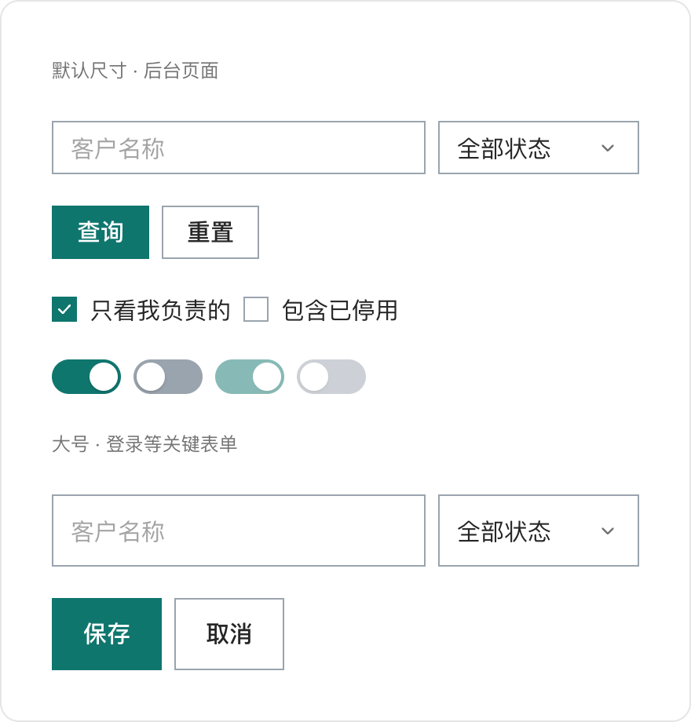
#0F766E控件 34直角Mihua 自绘
文件清单
docs/architecture.md「新增一份规范」
0.6spec/
spec/：规范层
语义角色
roles.ts主操作#0A0A0A
选中面#EBEBEB
控件边框#D4D4D4
控件高度32px
控件规格
controls.ts44
22
圆点 18离边 2开：主操作关：控件边框
图标集
icons.tsLucideMihua 自绘
文件清单
0.7core/
core/：React 与 Vue 共用的骨架
React · Ant Design
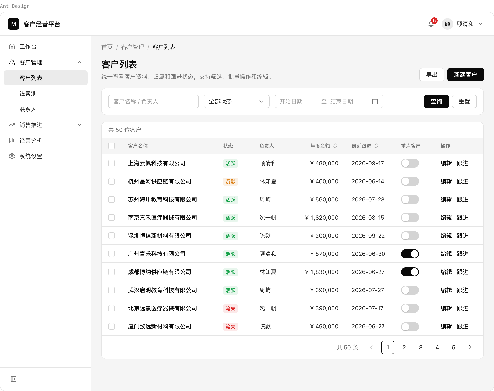
Vue · Element Plus
文件清单
0.8react/
react/：React 的套件与视图
外观
Ant Design
shadcn/ui
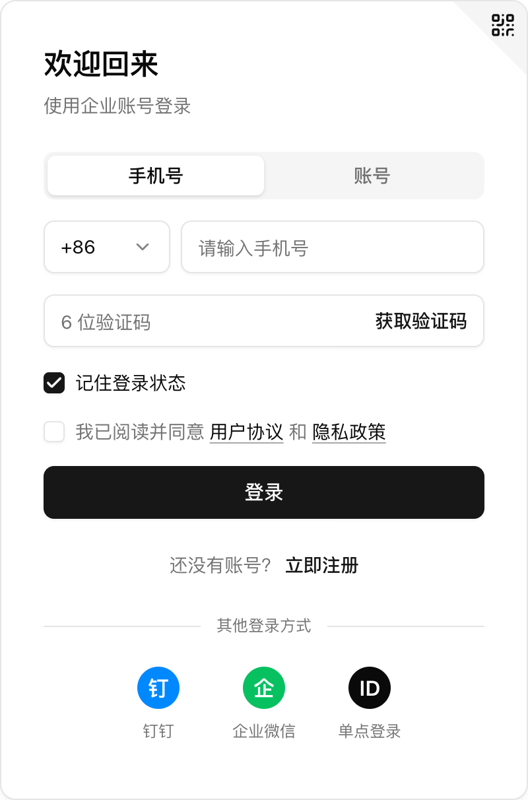
Arco Design
文件清单
0.9vue/
vue/：Vue 的套件与视图
外观
Element Plus
TDesign
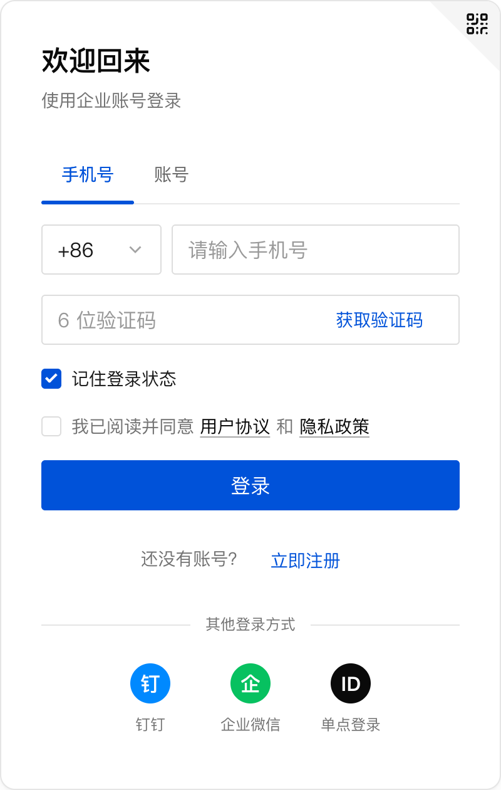
文件清单
0.10audit/
audit/：自动检查
检查页 · 登录框 · 五个组件库并排
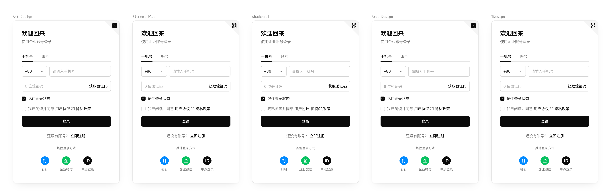
文件清单
| 想查什么 | 跟 AI 说 |
|---|---|
| 所有场景、所有组合 | 「跑一遍自动检查」 |
| 只查控件样张 | 「只检查控件样张」 |
| 只比其中两个库 | 「后台页面只比 shadcn/ui 和 Ant Design」 |
| 看组件库原生的样子 | 「只量不比，看组件库原生的样子」 |
audit/README.md；第 05 篇细讲它怎么量、量不到什么
0.11examples/
examples/：演示页、检查页、登记表
演示页 examples/index.html
给人看：顶上一排开关
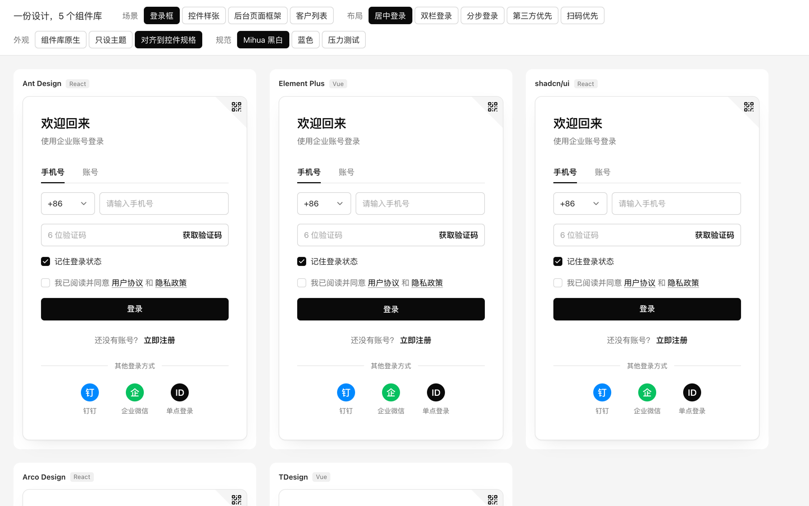
检查页 examples/audit.html
给检查量：五个库并排
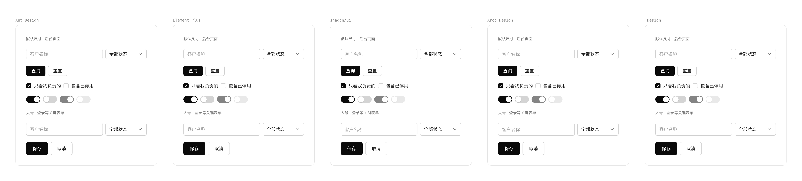
文件清单
0.12docs/
docs/：架构和做法说明
文件清单
0.13skills/ · AGENTS.md
skills/ 和 AGENTS.md：写给 AI 的说明
照 docs/接入一个新组件库.md，把 Naive UI 接进来。
读 AGENTS.md：这件事照哪份说明
打开 docs/接入一个新组件库.md（Claude Code 里是 Skill connect-component-library）
第 0 步到第 10 步，一步一步做
跑 npm run check，全部通过才算做完
文件清单
| 要做的事 | 照哪份说明 | Skill |
|---|---|---|
| 接一个新的组件库（比如 Naive UI、MUI） | docs/接入一个新组件库.md | connect-component-library |
| 给套件加一个新控件（比如抽屉、步骤条） | docs/给套件加一个新控件.md | add-kit-control |
| 已有项目不换结构，只让它和设计稿对上 | docs/只借方法.md | borrow-the-method |
| 定一处「各组件库做法不一样、统一成什么」 | docs/取舍记录.md | record-tradeoff |
AGENTS.md 开头那张表
0.14根目录
根目录：说明文件、许可与配置
mihua-blocks-open
文件清单
licenses/：许可原文
文件清单
源码 Apache-2.0；组件库和图标各自的许可放在 licenses/。
03第三部分
修改与交给 AI
0.15跟 AI 说
常用指令
帮我运行这个项目
127.0.0.1:4182
跑一遍完整检查
1类型检查2测试3构建4自动检查
四步都过才算做完，约 17 分钟，可以放后台跑。
| 跟 AI 说 | 它做什么 |
|---|---|
| 「帮我运行这个项目」 | 打开演示页 http://127.0.0.1:4182 |
| 「跑一遍完整检查」 | 类型检查、全部测试、构建、自动检查，全部通过才算做完。比较慢，可以放在后台跑 |
| 「只跑自动检查」 | 只量五个库一不一样；可以只查某个场景、某几个库，或者只看原生的样子 |
| 「只跑测试」 | 只跑测试 |
| 「只做类型检查」 | React 和 Vue 各查一遍 |
| 「把演示页打包」 | 把演示页编译成静态文件 |
| 「统一一下代码格式」 | 统一代码格式 |
package.json 的 scripts；AGENTS.md「检查」
0.16改一个数
修改一个数值，查看效果
把 designs/mono/Design.md 里的控件高度从 32 改成 36，五个组件库一起变高。
控件高度
Ant Design
Element Plus
shadcn/ui
Arco Design
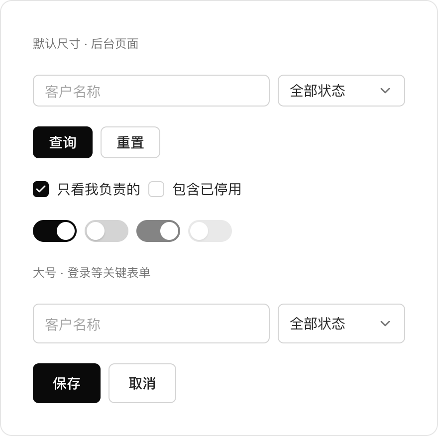
TDesign

README.md「改一个数试试」
0.17交给 AI
交给 AI 的指令示例
用 AI 编程工具打开仓库目录，直接说你要做什么。
先认识仓库
帮我把 mihua-blocks-open 这个项目跑起来，把演示页的地址给我。再用一张表告诉我：视觉、控件、结构、逻辑这四层，各在仓库哪个文件夹。只看，不要改仓库里的文件，也不用跑检查。
README 里写的三种用法
照 docs/接入一个新组件库.md，把 Naive UI 接进来。 照 docs/给套件加一个新控件.md，加一个抽屉。 照 docs/只借方法.md，让我这个 antd 后台和 Design.md 对上。
会改文件的，最后要跑完整检查。
README.md「让 AI 接你自己的组件库」
0.18支持范围
本案例支持范围
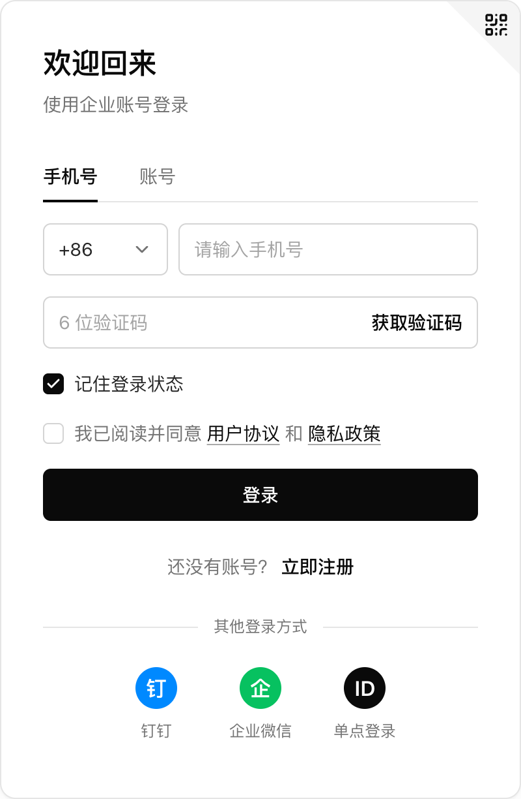
登录框控件样张
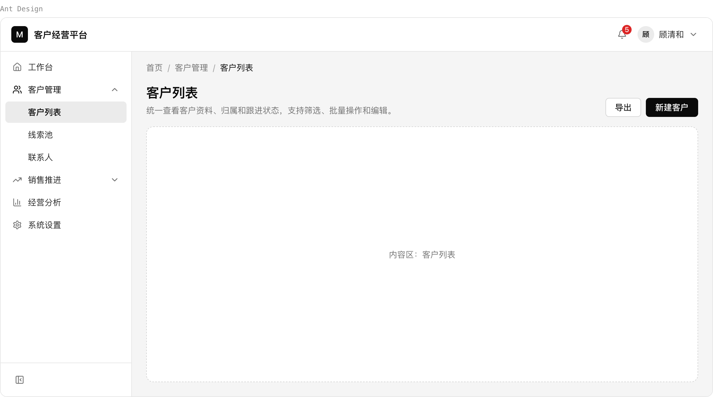
后台页面框架客户列表
深色模式还没有
窄屏还没有
| 现在 | |
|---|---|
| 场景 | 登录框（五种布局）、控件样张、后台页面框架（顶栏、可收起的侧栏、面包屑）、客户列表（筛选栏、表格、编辑对话框） |
| 控件 | 按钮、输入框、选择框、复选框、标签栏、开关、导航菜单、面包屑、下拉菜单 头像、徽标、表格、分页、标签、日期范围、对话框、单选、多行输入 |
| 表格没做的 | 固定列、虚拟滚动、展开行、拖拽、树形表格；要的话照「给套件加一个新控件」自己加 |
| 还没有的 | 深色模式、窄屏的场景 |
| 检查证明什么 | 证明几个组件库一样，不证明好看；它说「全部一致」，只代表它量了的那些一致，盲区写在 audit/README.md |
README.md「做到哪、没做什么」
第 00 集 · 完整视频
第 00 集完整视频在课程里
这一篇对应的第 00 集完整视频，在「给设计师的零基础 AI 课」里。
完整版文字版还有每段代码的逐行解释和四个附录（组件库档案、适配记录、取舍记录、常用提示词）。